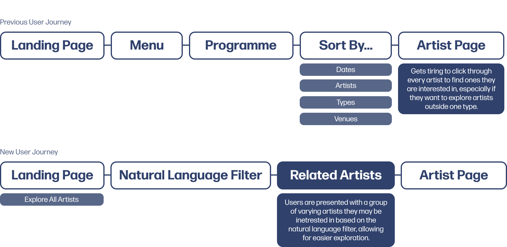

An Academic Project
La Bâtie-Festival de Genève - Brand Identity
My Contributions
- Did thorough research on the festival's audience to find areas of disconnect, allowing us to finalize a content strategy.
- Did graphic experimentation on over 250 posters to develop the art direction that would drive the visual and interaction design of the website and assets.
- Designed the final assets and created mockups for the final graphic assets using both Figma and Photoshop.
- Animated and prototyped the final website - mainly the natural language filter - creating the flow within Figma and editing it post recording to make the animation feel smooth.
Duration
4 Weeks (May - June 2025)
Role
Product Design
Interaction Design
Art Direction
Prototyping
Tools
Figma
Adobe Photoshop
Team Members
Yasamin Ketabchi
Lauryn Yau
Yumi Kawaoge
Sarrah Anuva
Introduction
The purpose of this project was to learn how to craft a cohesive visual identity throughout different assets, both physical, digital and interaction-wise.
We started with a lot of graphic experimentation in the form of posters, which were then translated to physical assets, and then finally into a microsite. The art direction choices were driven by a precedent designer as well as other design qualities and principles derived from an academic text.
Client Research
Meet the Client
The La Bâtie-Festival de Genève is an annual 18-day festival held in Switzerland. It brings together bold artistic creations from national and international talents, showcasing music, dance, theater, and performance across 50+ events in 40 venues spanning Geneva, France, and Vaud.
Client Needs
In order to understand the client needs, I conducted research on the festival. We needed to figure out what its unique points were and highlight those aspects in order to cater to their audience. This included looking at their past websites, researching this year's artists and themes, as well as digging into the archive to draw inspiration from past styles.
Identifying the Disconnect
After looking through the resources, we found that it was difficult for users to understand and connect to the performing artists, as the website serves mainly as a pre-festival ticket sale platform. There are many artists performing over the multiple days, and information on them is minimal, not leaving room for users to explore artists that interest them in an easier way, showcasing only a brief overview and links to the artists socials existing on the site.
Problem Statement
There are many artists on the webiste and not enough information on them, creating cognitive overhead for the users and making it difficult to find artists they may want to see perform.
Art Direction
Design Precedent, Qualities, and Principles
A major part of this project was to be able to take inspiration from other designers work and implement it into our work with our own style. To do this, I took a look at some work from our precedent designer - Experimental Jetset - and extracted three design qualities to use in our own work as well as two design principles taken from Ellen Lupton's 'Graphic Design: The New Basics' text.

Graphic Experimentation
By combining these qualities and principles together, I started doing experimentation by creating posters alongside my group members, making sure to implent 3 of the qesign qualities and principles into each poster.
Final Directions
With experimentation on over 250 poster iterations, we were able to create three main art directions, applying them to posters and two physical assets. I was was in charge of designing and creating the physical asset mockups, using both Figma and Photoshop for the design and mockups. We ended up choosing the 2nd direction for web.

Transiton to Web
Microsite Goal
As mentioned before, the current website was lacking ways to find and connect emotionally to artists. We wanted to solve this issue in an interactive way rather than just listing arists, so I took a look at the user-flow and sought out how I could consolidate it to reduce congnitive overhead for users wanting to explore artists at the festival.
I proposed the idea of adding an aspect of storytelling to help bridge the emotional gap, but we simplified that idea into a Natural Language Filter that will allow users to explore artists without having to scroll through a list of them, allowing them to find artist they may resonate with more deeply. I made sure that the team also still kept a way for users to explore all artists if they so wanted, allowing more ease of usability.
Final Microsite
Focuses on highlighting artist's creative processes, to spark curiosity, create emotional connection, and drive ticket sales. It introduces a user-based filter that helps visitors discover artists who resonate with their own interests and identity.

Interaction Highlights
*Disclaimer: All interaction animations were made with the limitaitons of Figma Prototyping!
Landing Page
The landing page uses the "text for structure and framing," "overlapping to obscure content" and "modularity" principles, paired with a sliding animation to help create anticipation for the content to come, and encourages users to look more closely at the content being presented. It mainly serves as an overview to the site, where users can see the overall festival information or explore specific artists.
Natural Language Fiter
The natural language filter allows users to filter through artists in a way that connects to them more. The content is organized into modular fragments, each one spotlighting a La Batie artist. The broken yet connected design reflects the festival’s multidisciplinary nature and acts as a visual filtering tool to guide discovery. Artist's images become clearer as the user progresses through. I created the fragmented loading animation to reflect the feeling of both process and progress as the user goes through to reveal their final lineup of artists.
Artist Page
The artist page uses large, structural text to encourage scrolling, and scroll-to-reveal interaction for smaller text so content is broken down into chunks, making it easier for users to digest. It focuses on highlighting the process and intention behind the performance, going beyond the final result to reveal how the work was shaped, allowing users to feel more deeply about the performance and the atrist who created it.
Uncovering Interaction
Masked images with a slide-to-reveal interaction serve as another cue for users to explore content, prompting them to look deeper, and spend more time revelaing information and taking a closer look at elements on the page.
Hover Interaction
The fragmented modularity of the images is also carried over to the artist page, using the same hover to reveal interaction I used in the natural language filter. This allows users to interact more with the artist, learning about objects and motifs they may use in their work, fostering a deeper understanding between the user and the performance.
Reflection & Next Steps
What I Learned
- Defining Principles and Precedents: Starting off this project by looking at another designers work felt strange at first, since I felt like I was going to be inclined to copy their style, but this projects helped me understand how I can take inspiration from other designers but still turn it into my own work instead of just a replica of theirs.
- Rapid Iteration: Since this project was very fast-paced with lots of iterations (many, many, many posters and three different prototyped versions of the microsite) I learned to not grow too attached to my ideas, since that can cause unnecessary delays and stop better ideas from shining through.
- Defining Functionality: We had to think a lot about the functional-expressive scale of a website, and where we wanted ours to fit in. Usually, I stick to making more functional and accessible sites, so it was really interesting to make this site that leans more towards the expressive design side (while still maintining basic functionality of course)!
What Would I do Next?
The next steps for me would be to work on refining the animations and interactions of the site, since the Figma Prototype animations don't relay the vision exaclty as I had hoped! I would also love to try my original idea of the natural language filter being more in the form of a story than straightforward questions.